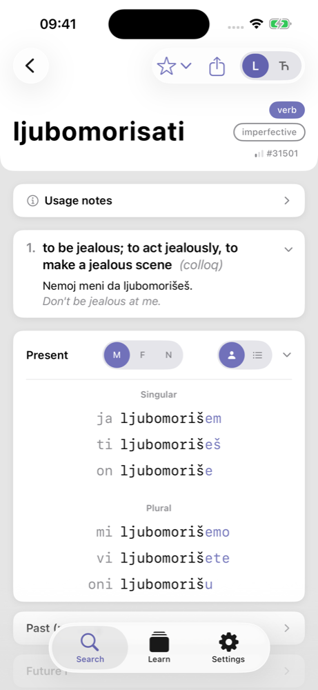
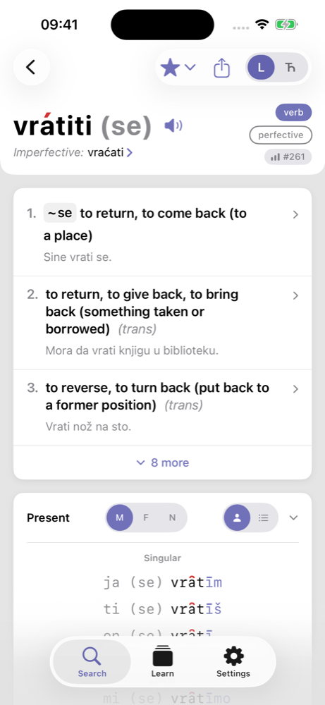
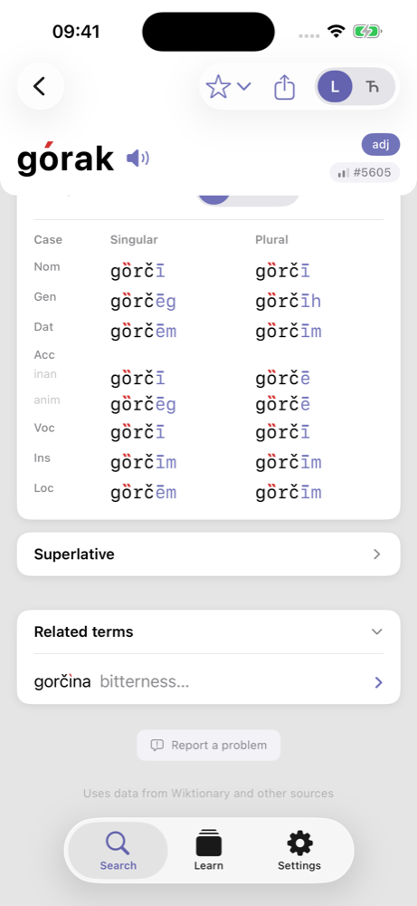
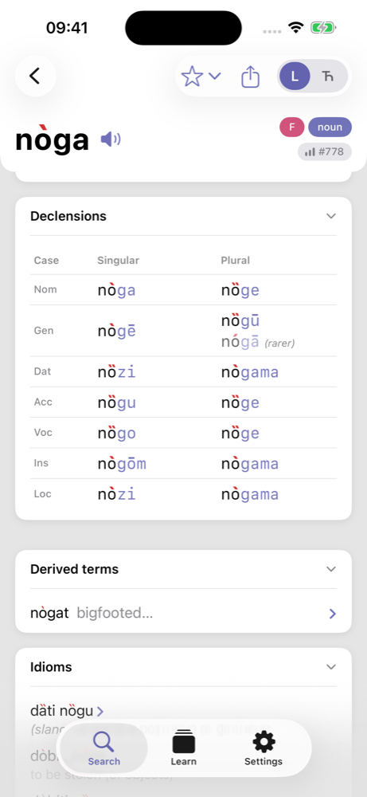

TL;DR
- For everyday translation and regular grammar the chatbot is excellent: 23 of 25 translations and 24 of 25 regular genitive plurals were right without any special settings.
- It fails where a learner most needs a source of record: accent placement was wrong on 20 of 25 words, it invented a verb and conjugated it in full in both runs, and it offered a reality-TV slang verb as the word for “to be jealous” without a word about register.
- Its extended-reasoning mode fixes many form questions (27 wrong answers became 18) but not the invented verb and only half of the accent errors.
- The point is not which model. Stronger models score higher, but no model can tell what it knows from what it is completing unless it is grounded in a source. A dictionary is that source.
- The right split: ask the chatbot to explain, exemplify and correct; ask the dictionary what the word is, how it is stressed, how it inflects and whether it exists. Check every word form the chatbot produces against the dictionary before you learn it.
A learner sent us a screenshot this month. They had asked a chatbot how to say “to be jealous” in Serbian. It replied with a verb, ljubomorisati, gave the first person, and offered to conjugate it. The first version of this article said the verb does not exist. Readers corrected us, and they were right: it is in no dictionary, but it is alive in one specific register, reality-TV recaps and tabloid headlines. Standard Serbian says biti ljubomoran, with an adjective. The chatbot said neither of those things. It did not warn that the word is colloquial, and when asked where to look it up, it named a dictionary that does not have it.
That is one anecdote. We wanted to know how typical it is, and, more usefully, what a learner should and should not delegate to a general-purpose chatbot. So we ran a small, controlled test and scored it against the dictionaries a Serbian lexicographer would use.
How we tested
We drew 125 Serbian words from Govori’s own frequency list in five bands, from the 500 most common words down to ranks 15,000–40,000, and wrote one learner-style question about each in Russian, the language most of our users think in. Five question types, five words per type per band: translate a Russian word, give a genitive plural, give a verb’s present and past forms, say where the accent falls and what tone it has, and name the case a verb governs. To those we added 36 hand-picked questions: irregular genitive plurals, existence probes (“is there a verb …?”), and open questions where the Serbian norm is known to trip people up: aspect of čuti, comparative of gorak, gender of auto, radiću versus radit ću.
Each question was asked in a fresh temporary chat on the chatbot’s free tier, so no earlier answer could leak into the next one. We ran the full set twice: once with default settings, once with the extended-reasoning mode switched on. Every answer was scored against the Rečnik srpskoga jezika (Matica srpska, 2011), the Croatian Language Portal (HJP) where the two standards coincide, and Wiktionary, as correct, partial (right form, wrong or missing detail), wrong, or fabricated (a word or form that does not exist).
What we found
| Question type | Asked | Right, default | Right, reasoning on | What went wrong |
|---|---|---|---|---|
| Translate a common word | 25 | 23 | 23 | one wrong equivalent, one imprecise |
| Regular genitive plural | 25 | 24 | 25 | — |
| Verb forms (3 pl. present, past) | 25 | 21 | 24 | rare verbs guessed from the wrong class |
| Case governed by a verb | 25 | 19 | 21 | alternatives omitted; once a preposition no reference lists |
| Irregular genitive plural | 12 | 8 | 11 | secondary form given as the only one |
| Norm questions | 16 | 11 | 13 | aspect of čuti, comparative of gorak, gender of auto: wrong in both passes |
| Accent and tone | 25 | 4 | 11 | wrong syllable, wrong tone, or both |
| Does this verb exist? | 8 | 4 | 6 | one verb invented in both passes; a slang verb given with no register warning |
| All | 161 | 114 | 134 |
Three things stand out. First, depth of vocabulary is not the problem. Words from the rarest band (ranks 15,000–40,000) were answered as well as the 500 most common ones, 22 of 25 right with reasoning on. Second, the errors cluster in exactly the places a learner cannot check by ear: where the stress sits and which tone it carries, whether a word exists at all, and a few normative facts that native speakers themselves get wrong. Third, the extended-reasoning mode helps with forms and does little for invention or register: it raised the overall score from 114 to 134 correct, but the one invented verb survived it with a full conjugation table, and only the reasoning run thought to call ljubomorisati colloquial.
Four failures worth learning from
Each of the cases below is one a learner would actually ask about. For each: what the chatbot answered, what Govori shows for the same word (tap the screenshot to open the entry in the app), and then what the printed references say, with links to the exact pages.
1. A slang verb sold as the standard word
Asked how to say “to be jealous”, the chatbot answered ljubomorisati. Asked point-blank in a later chat whether that verb exists, it said yes in both passes and conjugated it. Here we made a mistake of our own: the first version of this article called the verb invented. It is not. No standard dictionary lists it, but a large web corpus of Serbian has it about 800 times, a subtitle corpus of 283 million words has a handful of its forms, and it turns up in reality-TV recaps and tabloid headlines. It is slang, roughly “to make a jealous scene”, and it conjugates like other -isati verbs: ljubomorišem, ljubomorisao, ljubomorisanje. That puts the failure where it belongs: register. In the default run the chatbot presented it as the translation, full stop. Asked where to look it up, that run named the Matica srpska dictionary and Wiktionary, neither of which has it. Only the extended-reasoning run added the one word that matters, разговорный, colloquial, and even it did not say that no dictionary lists the verb. And when that same reasoning run was asked how to say “to be jealous”, it offered a third form, ljubomoriti, which has no Serbian attestation at all: it is the Macedonian verb.
A chatbot that knows a slang word is useful. A chatbot that does not tell you it is slang teaches you to say, at a job interview, what people say on reality TV. The genuinely invented verb in our set was a different one: zavidovati for “to envy”, hedged as “rare and bookish” and conjugated in full. No dictionary and no corpus we checked has it; the verb is zavideti.
What the chatbot said
«По-сербски «ревновать» — ljubomorisati (љубоморисати).» … asked where to find it: «Речник српскога језика — академический словарь сербского языка; это один из самых авторитетных вариантов. Викиречник — удобно для быстрого просмотра форм и спряжения.»
Default run, two turns. No register warning, and the dictionary it names does not list the word. The extended-reasoning run, in a separate chat, did call the verb разговорный.
Partial: real slang, no register warning; false citationWhat Govori shows

Until this week Govori did not have the verb either, because it follows the standard dictionaries. It does now: the sense carries the colloq label, and the usage note says that no dictionary lists it, where it is used, and that the standard expression is biti ljubomoran. The register is the first thing you see. Open ljubomorisati in the app.
What the references say
“ljubòmoran … koji pati od ljubomore”
— HJP, entry ljubomoran. The portal has the adjective and the noun ljubomora; no verb is listed under either.
“There were no results matching the query.”
— Wiktionary search for ljubomorisati. The Matica srpska dictionary likewise lists љубомора, љубоморан, љубоморно and no verb.
“ljubomorisati” — 796 occurrences; for scale, “zavideti” — 20,849
— lemma frequency list of the CLASSLA-web.sr corpus (CLARIN.SI), the same export Govori uses for its frequency ranks. Real, and about 26 times rarer than the standard verb for envy.
ljubomorišem 5 · ljubomorišeš 3 · ljubomorišu 2 · ljubomorisao 2 · ljubomorim 0 · ljubomorio 0 · ljubomorujem 0
— OpenSubtitles 2018 Serbian word list, 283 million words of spoken register. The verb is ljubomorisati; the -iti and -ovati forms the chatbot also produced do not occur. Macedonian has љубомори; Serbian does not.
“Alibaba uleteo Aneli u krevet i zabranio joj da mu ljubomoriše” … “Nemoj meni da ljubomorišeš”
— a reality-show recap on pink.rs. This is the register the word lives in.
This is the failure mode a learner cannot detect. The word is well formed, it follows a productive pattern, it comes with examples, and it is even real. Nothing in the answer tells you which room you can say it in. A dictionary handles it the only honest way: either it lacks the word, which itself tells you the word is new, slang or invented, or it has the word with a label on it. Either way you learn what kind of word you are holding.
2. Accent on a syllable that cannot carry it
Vratiti (“to return”) is a first-year verb. Its accent is a long rising tone on the first syllable, vrátiti. The chatbot placed it on the last syllable in the default pass and on the second syllable, with a falling tone, in the reasoning pass. Both are impossible in standard Serbian: a falling accent can sit only on the first syllable, and the infinitive ending is never stressed. A learner who knows those two rules would have caught it. The chatbot did not.
What the chatbot said
Default: «ударение падает на последний слог -ti … vratíti». Extended reasoning: «второй слог, краткий нисходящий: vratȉti».
Two runs, two different syllables, neither of them the first. A falling accent on a non-initial syllable does not occur in standard Serbian.
Wrong, both runsWhat Govori shows

vrátiti: long rising on the first syllable, and every form in the tables carries its own mark. Open vratiti in the app.
What the references say
“vrátiti (se) … svrš.”
— HJP, entry vratiti: long rising on the first syllable. Matica srpska prints вра́тити, the same accent.
Accent was the weakest category by far: 4 of 25 right by default, 11 with reasoning on. When the reasoning mode did get an accent right, it had often searched the web first and cited a Wiktionary page. When it reasoned on its own, it tended to default to “first syllable, short falling”, which is a frequent Serbian pattern but not a rule.
3. The comparative that is a different word
“What is the comparative of gorak (bitter)?” The answer both times was gori. But gori is the comparative of zao and loš, “worse”. The comparative of gorak is gorči. The chatbot even wrote a sample sentence, Ovaj lek je gori od onog, which a Serbian speaker reads as “this medicine is worse than that one”, not “more bitter”. With reasoning on it listed the superlative as “najgorči or najgori”, contradicting its own comparative in the same answer.
What the chatbot said
«Сравнительная степень сербского прилагательного gorak («горький») — gori. … Ovaj lek je gori od onog. — Это лекарство горше того. … najgorči / najgori — самый горький».
Same answer in both runs. The sample sentence actually says “this medicine is worse than that one”, and the superlative it offers contradicts its own comparative.
Wrong, both runsWhat Govori shows

The comparative panel of górak: gȍrčī, declined through every case. Open gorak in the app.
What the references say
“górak … comparative gȍrčī”
— Wiktionary, gorak (CC BY-SA). Matica srpska prints горак … комп. горчи.
4. Same question, different answer, both wrong
“Is čuti (to hear) perfective or imperfective?” The default pass said perfective only. The reasoning pass said imperfective, with začuti as its perfective partner. The dictionaries say it is both: čuti is one of the biaspectual verbs, and Čuo sam can mean “I heard” or “I was hearing” depending on context. Two confident, contradictory answers to one question is a pattern we saw more than once: the accent of htenje flipped from short falling to long falling between passes, and it is in fact long rising, so both were wrong.
What the chatbot said
Default: «čuti — глагол совершенного вида». Extended reasoning: «глагол несовершенного вида (nesvršeni glagol) … его типичный видовой коррелят začuti — совершенный».
Two runs, two opposite labels, each stated as the dictionary classification.
Wrong, both runsWhat the references say
“čȕti (koga, što) dv.”
— HJP, entry čuti. The label dv. is dvovidan, “biaspectual”. Matica srpska: чути … свр. и несвр.
The genitive plural of noga went the same way: nogu in one chat, “noga, like ruka → ruka” in another, where ruka → ruka is simply wrong (it is ruku).
What the chatbot said
«форма родительного падежа множественного числа — noga. … Это типично для многих сербских существительных женского рода на -a: žena → žena, ruka → ruka («рук»), knjiga → knjiga.»
Extended-reasoning run. The default run had given nogu two chats earlier.
Partial: the rarer variant, presented as the only oneWhat Govori shows

Genitive plural nȍgū, with nógā shown as the rarer variant. Open noga in the app.
What the references say
“nòga ž 〈… G nȍgū/nógā reg. knjiš.〉”
— HJP, entry noga: nogu is the form, noga is marked regional and bookish. Matica srpska: нога ж (… мн. ноге, ген. ногу).
How to use a chatbot well for Serbian
None of this means “do not use a chatbot”. In our own test it was right about seven times in ten, and on the things it is built for, explaining, contextualising, generating practice material, it is better than any dictionary. The point is to ask it the questions it can answer and to route the others elsewhere. Six habits, in order of payoff:
- Ask for usage, not for facts about the word. “Give me five sentences with vratiti in the perfect tense, about travel” is a great prompt. “Where is the accent in vratiti?” is a coin toss.
- Treat every new word as unverified until a dictionary has it, and ask about register when it does not. If the chatbot offers a word you have never met, look it up before you memorise it. If the dictionary returns nothing, the word is new, slang or invented. Ask the chatbot directly: is this standard, colloquial or slang, and where would I hear it? A good answer names the register; a bad one repeats the conjugation.
- Never take accent or tone from a chatbot. In our test it was wrong more often than right even with reasoning on, and a wrong accent learned early is expensive to unlearn. Accent is dictionary territory.
- Switch reasoning on for forms. Across the whole test it improved the verdict on 23 items and worsened it on 4, and almost all of the gains were form questions. It is slower and worth it for anything you will write down.
- Ask the same question twice in fresh chats. If the two answers disagree, you have learned something more useful than either answer: this is a question for a reference.
- Make it show its work in the language, not about the language. Ask for a sentence and a translation, then check the sentence’s forms in the dictionary. Meta-statements (“this is the nominative plural”, “this is a perfective verb”) were where most of the wrong labels lived.
A prompt that worked well in our transcripts, in the Russian the tests were run in and in English:
Explain the difference between treba da idem and moram da idem with three short dialogues. Do not give me any words I have not seen yet without marking them.Объясни разницу между «treba da idem» и «moram da idem» на трёх коротких диалогах. Новые слова помечай.
How the two tools fit together
A dictionary and a chatbot fail in opposite directions. A dictionary is silent about anything it does not contain, and it will not explain why a form is the way it is or produce a sentence for you. A chatbot is never silent. It will always produce something, and the something is fluent, well formed, occasionally invented, and occasionally slang with the label left off. Put together, each covers the other’s gap: the dictionary is the source of record for what a word is, the chatbot is the tutor for how to use it.
In practice the loop looks like this. You hear vrati se in a film. The dictionary finds vratiti from the inflected form, tells you it is perfective, shows the accent and the pair vraćati. Now you know what you have. You ask the chatbot for six sentences contrasting vratiti and vraćati, and it gives you a good mini-lesson on aspect. You spot a form in its sentences you have not seen, vraćao sam se, and you check it in the dictionary’s past-tense table. It is there. You learn it.
Reverse the order and the loop breaks. Ask the chatbot first how to say “to be jealous”, learn ljubomorisati as if it were the standard word, and there is no later step that catches the register, because you will not look up a word you believe you already know.
What about better models?
Two objections reached us within a day of publishing. The first, that ljubomorisati exists, was right and is dealt with above. The second: “I asked a stronger model about those accents and it got them right.” We believe it. Our own reasoning pass got seven more accents right than the default pass, and paid tiers and frontier models are better still. That is not the point of this test. We tested what most learners actually use: the free tier of the most popular chatbot, with the settings it comes with. That is the tool the learner in our first paragraph had in their hand.
But suppose you have the best model there is, and it answers every accent question correctly. The structural problem is untouched. A language model has no way to tell what it knows from what it is completing. When it writes vrátiti it produces the same kind of confident text as when it writes vratȉti; there is no internal flag that says “this one I looked up, this one I made to fit the pattern”. Its fluency is constant, its knowledge is not, and nothing in the output marks the boundary. The same applies to register: the model that knew ljubomorisati from reality-TV recaps had no way to know that it knew it from reality-TV recaps.
In our data the better-model effect and the grounding effect are easy to tell apart. When the reasoning run got an accent right that the default run had got wrong, it had often searched the web and was citing a page. When it reasoned unaided it fell back on the most common pattern, first syllable, short falling, and was wrong. Grounding, not size, fixed those answers. A dictionary is grounding in its purest form: a closed inventory, every claim traceable to a printed page, a register label on every sense, and a real “nothing here” when the word is absent. That last property is the one no model has by itself, and it is the one that turns “here is a word” into “here is a word, and here is what kind of word it is”. The chatbot and the dictionary are not rivals. A chatbot with a dictionary open is what a good tutor looks like.
What this test does not show
This was 161 questions on one day in September 2026, on the free tier of one product, asked in Russian, scored by one lexicographer against the references we use to build Govori. Paid tiers, other chatbots and other languages may do better or worse. Our own data is not beyond question either: three of the 322 answers sent us back to the printed sources to re-check entries of ours, two entries changed as a result, one chatbot answer we had provisionally accepted turned out to be supported by no reference, and a reader’s objection sent us to a web corpus and turned an “invented” verb into a slang one. The verdicts in this article are the corrected ones. Every transcript, verdict and reference is on file, and we will publish the full table when the paper is finished.
Govori’s entries are compiled from Wiktionary (CC BY-SA), checked against the Rečnik srpskoga jezika (Matica srpska, 2011) and the Croatian Language Portal, with the reading of each reference recorded per entry. Links to HJP and Wiktionary above open the pages we quoted.